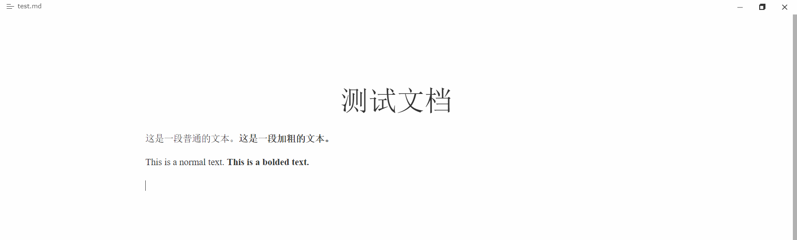
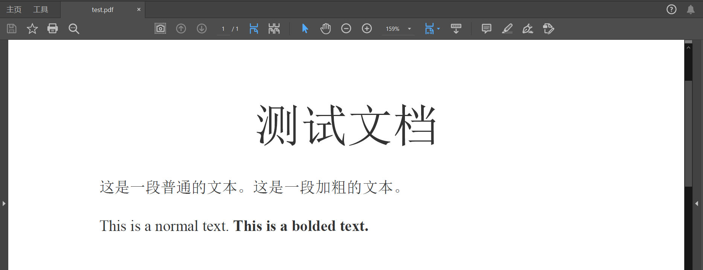
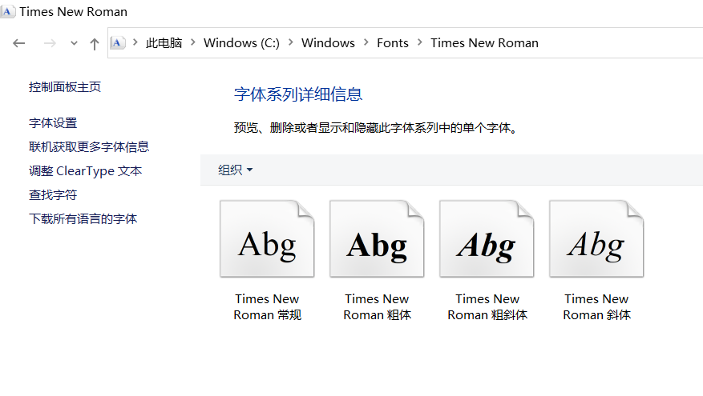
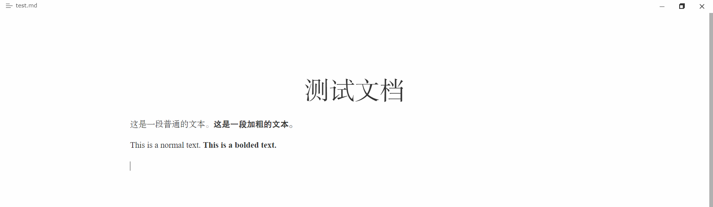
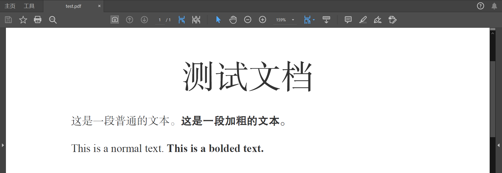

以Whitey主题为例。
使用默认的Whitey主题时，Typora可以正常显示中文粗体，导出为PDF文件之后也可以正常显示。
如果对默认的微软雅黑字体不满意，只需修改css文件配置即可。
在Typora的主题文件夹中找到whitey.css，复制一份副本并重命名，仍放在原来的文件夹下；文件名最好全由小写字母或下划线组成，确保Typora可以识别新主题。这里我们将副本命名为whitey_cjk.css。
找到开头的：
body {
font-family: "Vollkorn", Palatino, Times;
...
}
将font-family改为：
font-family: Times, 宋体;
重启Typora，可以看到主题库里新增了“Whitey Cjk”主题，点击使用，即可使用宋体渲染中文：

不过，这里的粗体宋体事实上是伪粗体，类似于LaTeX中的AutoFakeBold选项，或Word中常用的加粗功能。当使用Typora导出PDF时，中文字体的伪粗体功能失效了：

这是因为西文字体Times New Roman事实上是由一套完整的常规（normal）、粗体（bold）、斜体（italic）、粗斜体（bold italic）的字体组成的：

但在中文字符数量庞大，除了微软雅黑等少数字体之外，中文字体很少会专为粗体/斜体/粗斜体设计不同的字体文件，而是主要依靠Word、Typora等编辑器的渲染功能实现伪粗体、伪斜体等效果。
中文表达中使用斜体的场合并不多，粗体是主要的需求。
而Typora导出PDF的功能恰恰不支持伪粗体的渲染，导致PDF的质量大打折扣。
此时就要考虑使用font-face功能来自定义字体族。
我们首先需要找到两个不同的字体，分别充当自定义字体族的常规字体和粗体，这里使用的是“方正书宋_GBK”和“方正公文黑体”（字体仅用于示例，非商用）。
在Typora的主题文件夹下新建whitey_cjk文件夹，将这两个字体的字体文件复制到该文件夹之下。
在whitey_cjk.css的开头添加这样的代码：
@font-face{
font-family: "My Font Family";
font-style: normal;
font-weight: normal;
src: url(whitey_cjk/FZSSK.TTF);
}
@font-face {
font-family: "My Font Family";
font-style: normal;
font-weight: bold;
src: url(whitey_cjk/FZHT_Document.TTF);
}
这样就分别定义了自定义字体族"My Font Family"的normal和bold两种字重。
然后再修改body的font-family设置：
font-family: Times, "My Font Family";
即可在Typora主界面实现效果：

再导出PDF，也可正常显示粗体：

事实上，whitey_cjk.css中还有media print选项：
@media print {
html {
font-size: 13px;
}
}
该选项中可单独为打印/导出PDF设置font-family，但可能导致其他错误，如非粗体文字反而无法显示等，所以对media print选项一般无需进行修改。